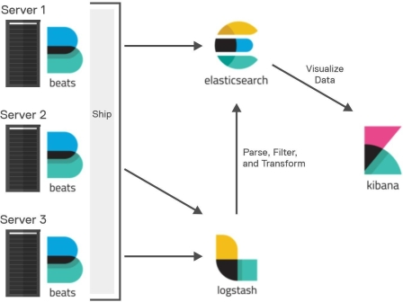
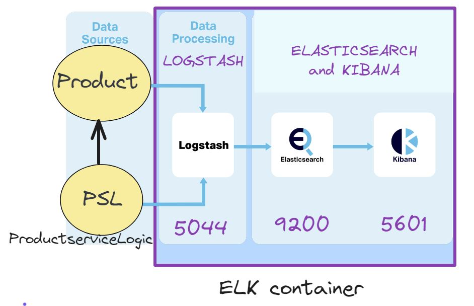

UsingELK¶
Stack ELK¶
Lo (Elasticsearch, Logstash, Kibana) soddisfa un’esigenza nello spazio di analisi dei dati di log nei sistemi distribuiti.
{kind=link}
Beats: agenti che permettono il collect e l’invio dei dati verso lo stack Elastic.
Logstash: strumento open source che permette di raccogliere dati da una varietà di origini, trasformarli e inviarli alla destinazione desiderata.
Elasticsearch: motore di ricerca e analisi dei dati distribuito RESTful , basato su Apache Lucene che opera con documenti JSON senza schema. Dal 21 gennaio 2021 Elastic NV lo rende disponibile con la Licenza (non open source) Elastic o SSPL.
Kibana: strumento di visualizzazione ed esplorazione dei dati utilizzato per analisi dei dati, dei registri e serie temporali, monitoraggio delle applicazioni e casi d’uso di intelligenza operativa
L’uso dello stack ELK offre diversi vantaggi cruciali nella costruzione di architetture a microservizi:
Centralizzazione dei Log: In un’architettura distribuita come quella dei microservizi, ogni servizio genera i propri log. ELK permette di aggregare tutti questi log in un’unica piattaforma centralizzata (Elasticsearch), semplificando enormemente il monitoraggio e la risoluzione dei problemi. Non è più necessario accedere a singoli server per analizzare i log.
Ricerca e Analisi Potenti: Elasticsearch offre capacità di ricerca full-text veloci e sofisticate sui log aggregati. Questo consente agli sviluppatori e agli operatori di filtrare, interrogare e analizzare grandi volumi di log in modo efficiente per identificare errori, pattern di comportamento, problemi di performance e altro ancora.
Visualizzazione Intuitiva: Kibana fornisce una potente interfaccia utente per visualizzare i dati contenuti in Elasticsearch. È possibile creare dashboard personalizzati con grafici, tabelle e mappe per monitorare lo stato dei servizi, tracciare metriche chiave, identificare anomalie e ottenere una comprensione olistica del sistema.
Troubleshooting Efficace: La combinazione di ricerca potente e visualizzazione chiara facilita notevolmente il debugging e la risoluzione dei problemi in ambienti microservizi complessi. È possibile tracciare le richieste utente attraverso più servizi, identificare la causa radice degli errori e monitorare l’impatto delle modifiche.
Monitoraggio in Tempo Reale: ELK permette di monitorare i log in tempo reale, fornendo visibilità immediata sullo stato e sul comportamento dei microservizi. Questo è fondamentale per rilevare tempestivamente eventuali problemi e intervenire prima che impattino sugli utenti.
Scalabilità: Tutti i componenti dello stack ELK sono progettati per essere scalabili orizzontalmente, il che è fondamentale in architetture a microservizi che possono crescere e scalare dinamicamente.
Flessibilità e Personalizzazione: ELK è altamente configurabile ed estendibile. Logstash permette di raccogliere e trasformare dati da diverse fonti e in vari formati, mentre Kibana offre ampie opzioni di personalizzazione per la creazione di visualizzazioni specifiche per le esigenze del team.
Osservabilità: ELK contribuisce in modo significativo all’ottenimento di una maggiore osservabilità del sistema a microservizi, fornendo insight non solo sui log ma anche, potenzialmente integrato con altri strumenti, su metriche e tracing.
Introduzione all’uso dello stack ELK¶
Sono stati prodotti alcuni video che introducono all’uso dello stack ELK con riferimento a un sistema applicativo che intende fornire servizi CRUD di prodotti da trasportare in un cargo.
Progetto cargoproduct¶
Il progetto realizza il core-business applicativo con un insieme di classi Java.
L’architettura del sistema è stata sviluppata nel modo che segue:
Definizione di una Product.java che descrive le proprietà dei prodotti da trasportare:
Definizione di una ProductServiceLogic.java che descrive la logica di un servizio di gestione dei prodotti. Questa classe:
realizza il contratto tipico di un servizio che realizza le operazioni CRUD (Create, Read, Update, Delete) sui prodotti: ICrudOps.java.
IPOTIZZA che il contratto IStorage.javacargoproduct interfaces> debba essere rispettato dall’entità che si occupa di memorizzare i prodotti.
si avvale anche di supporti per la memorizzazione dei prodotti (Storage) cui accede tramite adapter, allo scopo di evitare dipendenze dirette.
cargoproduct interfaces¶
ICrudOps.java |
package main.java.domain;
import java.util.List;
public interface ICrudOps {
//CRUD operations
public boolean isProductPresent(Product p);
public Product createProduct(Product body);
public Product getProduct(String productId);
public List<String> getAllProducts();
public Product getProduct(int productId);
public boolean deleteProduct(String productId);
public boolean deleteProduct(int productId);
}
|
IStorage.java |
package main.java.domain;
import java.util.List;
public interface IStorage {
public void createItem(int id, String jsonRep);
public String getItem( int id );
public List<String> getAllItems();
public boolean deleteItem( int id );
public int getItemNum();
}
|

La logica applicativa si avvale del sistema ELK per i log.
{kind=link}
Progetto cargoserviceQak¶
Il progetto realizza un (micro-servizio) con logica applicativa data da ProductServiceLogic.java.
Il servizio è definito da un cargoservice.qak che messaggi:
System cargoservice
mqttBroker "localhost" : 1883 eventTopic "cargoevents" //mosquitto se in docker
Request createProduct : product(String) //String JSON '{"productId":31,"name":"p31","weight":311}'
Reply createdProduct: productid(ID) for createProduct //String JSON
Request deleteProduct : product( ID )
Reply deletedProduct : product(String) for deleteProduct
Request getProduct : product( ID )
Reply getProductAnswer: product( JSonString ) for getProduct
Request getAllProducts : dummy( ID )
Reply getAllProductsAnswer: products( String ) for getAllProducts
Dispatch cargoinfo : cargoinfo( INFO )
Event cargoevent : cargoevent( INFO )
Event alarm : alarm(X) //for basicrobot
Il microservizio si avvale di un borker MQTT
ProductServiceCallerMqtt.java
ProductServiceAsynchCallerJsonTcp.java
Video: https://unibo.cloud.panopto.eu/Panopto/Pages/Viewer.aspx?id=31e7d7e8-89da-46da-838e-b1f200e81058
Attivazione dle sistema ELK¶
L’attivazione del sistema ELK avviene all’iterno di un container docker, organizzato come descritto nel file docker-compose.yml
E’ importante avere cura che i vari componenti facciano riferimento ad una stessa versione.
Librerie per ELK¶
Il file build.gradle deve includere le seguenti librerie:
dependencies {
//implementation 'org.slf4j:slf4j-api:1.7.30' //SOLO INTERFACE
implementation 'ch.qos.logback:logback-classic:1.2.11'
implementation("net.logstash.logback:logstash-logback-encoder:7.3")
}
E’ importante usare versioni compatibili delle ultime due librerie.
logback.xml¶
Il file logback.xml introduce una specifica che indica che i log vengono inviati anche a Logstash tramite un appender che usa TCP. <appender name=”logstash” class=”net.logstash.logback.appender.LogstashTcpSocketAppender”>
<destination>localhost:5044</destination> <encoder class=”net.logstash.logback.encoder.LogstashEncoder”/>
</appender>
logstash.conf¶
In base a quanto specificato in logback.xml, Logstash è stato configurato nel file logstash.conf, come segue:
input {
tcp {
port => 5044
codec => json
}
}
output {
elasticsearch {
hosts => ["http://elasticsearch:9200"]
index => "cell-"
}
stdout {
codec => rubydebug
}
}
parte di input: ascolta sulla porta 5044
parte di output: invia i log a Elasticsearch via http sulla porta 9200 specificando l’indice: cell-.
l tag (opzionale) stdout introduce l’uso di un debugger
I log processati da Logstash, sono inviati in Elasticsearch, che li memorizza in documenti JSON all’interno dell’indice “cell-”
Interazioni con Elastichsearch via curl¶
Ricerca di log¶
curl -XGET "http://localhost:9200/cell-*/_search" -H 'Content-Type: application/json' -d'
{
"query": {
"match_all": {}
}
}'
curl -XGET "http://localhost:9200/cell-*/_search" -H 'Content-Type: application/json' -d'
{
"query": {
"match": {
"logger_name":"gamemaster_actor"
}
}
}'
Eliminazione di tutti i log¶
curl -X POST "http://localhost:9200/cell-*/_delete_by_query" -H 'Content-Type: application/json' -d'
{
"query": {
"match_all": {}
}
}'
Aggiunta di log¶
curl -X POST "http://localhost:9200/cargo-logs-/_doc/1" -H 'Content-Type: application/json' -d'
{
"productId": 50,
"weight": 250,
"name": "p50"
}'